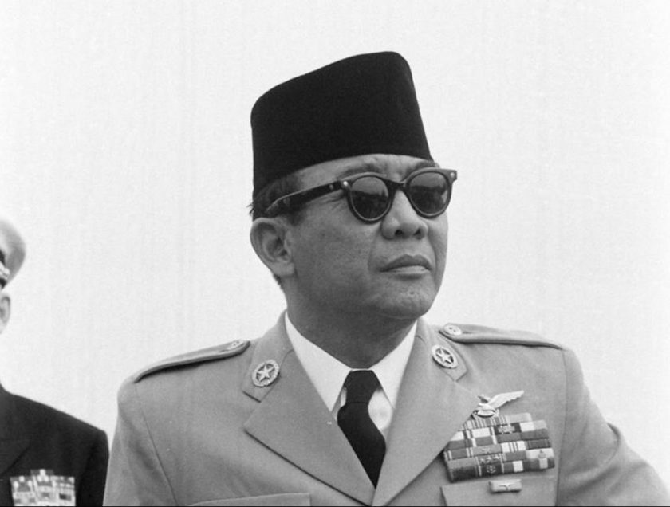

Biografi Soekarno
Sampai saat ini bapak proklamator Indonesia ini menjadi salah satu tokoh yang paling dikagumi di Indonesia. Beliau merupakan pesohor di Indonesia dengan isi pidato yang menginspirasi dan membakar semangat anak – anak muda di masanya.
Bahkan sampai saat ini isi pidato Bung Karno masih saja disukai dan dijadikan pembakar semangat generasi penerus setelahnya. Sebagai presiden, Soekarno sangat disegani oleh para pemimpin negara di dunia pada waktu itu. Soekarno dilahirkan di Surabaya tepatnya pada tanggal 6 Juni 1901 dengan nama asli Koesno Sosrodihardjo. Beliau merupakan anak yang berprestasi sejak kecil bahkan Soekarno mampu menguasai begitu banyak bahasa sehingga dikenal dengan kecerdasannya di mata dunia. Berikut biodata soekarno untuk Anda.
| Nama lengkap | : Ir. Soekarno |
| Nama panggilan | : Bung Karno |
| Nama kecil | : Kusno |
| Tempat, tanggal lahir | : Blitar, 6 Juni 1901 |
| Agama | : Islam |
| Meninggal | : 21 Juni 1970 |
| Dimakamkan | : Blitar, Jawa-Timur |
| Nama Isteri |
|
| Anak |
|
| Pendidikan |
|
Bung Karno adalah nama populer dari Soekarno. Lahir pada 6 Juni 1901 di Blitar, Jawa Timur. Ketika Soekarno kecil, ia tidak tinggal bersama dengan orang tuanya yang berada di Blitar. Ia tinggal bersama dengan kakeknya yang bernama Raden Hardjokromo di Tulung Agung, Jawa Timur. Soekarno bahkan sempat mengenyam sekolah disana walau tidak sampai selesai, karena harus ikut bersama dengan orang tuanya yang pada waktu itu pindah ke Mojokerto. Di Mojokerto, Soekarno kemudian disekolahkan di Eerste Inlandse School dimana ayahnya juga bekerja disitu sebagai guru. Akan tetapi kemudian ia dipindahkan pada tahun 1911 ke ELS yang setingkat sekolah dasar untuk dipersiapkan masuk di HBS yang ada di Surabaya. Setelah tamat dan bersekolah di HBS tahun 1915, Soekarno kemudian tinggal di rumah Haji Oemar Said Tjokroaminoto atau HOS Cokroaminoto yang merupakan sahabat dari ayah Soekarno. Darisanalah Soekarno kenal dengan dunia perjuangan yang membuatnya menjadi pejuang sejati.